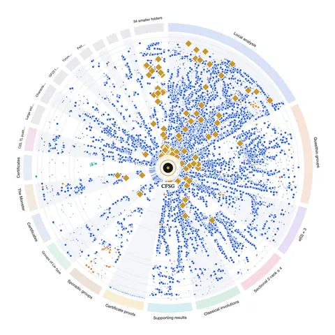

Axiom Math formalizes the classification of finite simple groups in Lean
The complete formalization follows the first-generation proof (thousands of journal pages by about a hundred mathematicians), and Lean's kernel checks every logical step. Axiom Math engineers and mathematicians directed AI agents over 24 days, producing approximately 43.1 million lines of code and finding an issue in a published argument for the Unbalanced Group Theorem.

Checked against: axiommath.aicfsg.axiommath.aiAxiomMath/CFSGhexagonmath.org